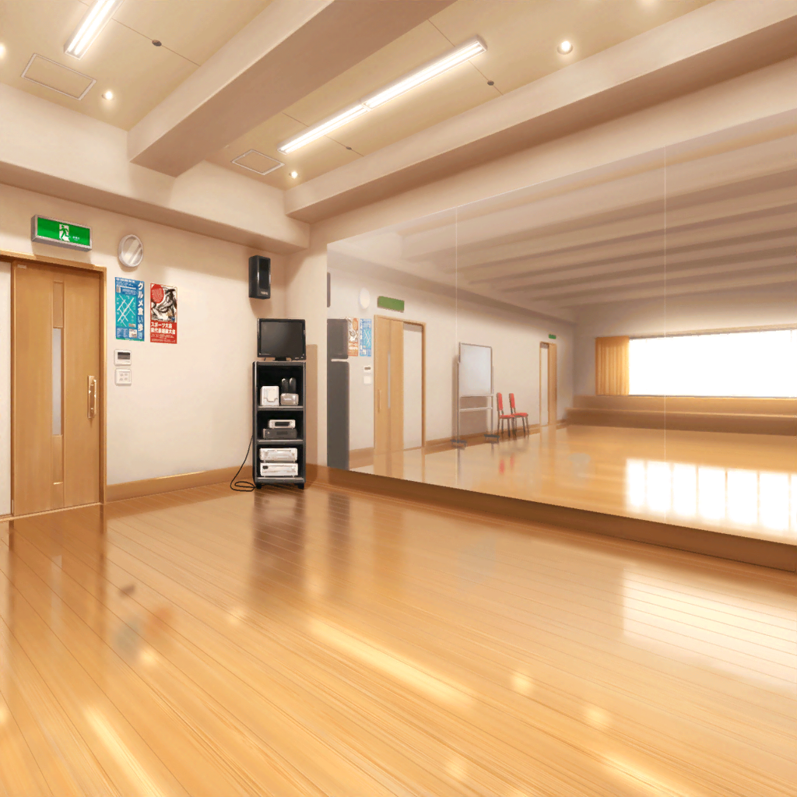
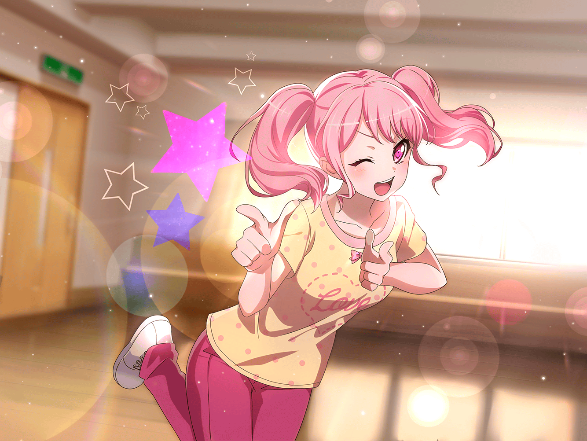

芸能事務所 会議室
彩
私、研究生時代に教わったレッスンがあるんだけど……
事務所のレッスンとは別に、みんなもやってみない？
彩
基礎体力をつけるレッスンとか、
バンドをやるにしてもきっと役にたつと思うし……
自分たちにできることは、全部やっておきたいなって思って
イヴ
わあ……トックンですね！
ブシもトックンを怠らず、
自分と向き合うことを大事にしています！
イヴ
アヤさんのおかげで、また一歩、ブシに近づける気がしますっ！
麻弥
目指すのは武士じゃなくてアイドルなんじゃないんですか……！？
日菜
特訓かー。いいんじゃない？
あたしは別に練習しなくてもできるけどー、ま、暇だし！
麻弥
ジブンも楽器の知識なら多少ありますが……
アイドルってなんなのか、よくわからないので……
彩さん、教えてくださいっ！
彩
うんっ……！ 一緒にがんばろう！
千聖ちゃんも……
千聖
ごめんなさい。私はまだ個人の仕事が残っているから
事務所のレッスン以外の時間は取れなさそうなの
イヴ
そうですか……
千聖
本当にごめんなさい。
その分事務所のレッスンは精一杯がんばるつもりだし、
もし時間があえば自主練にも参加させてもらうわね
千聖
……そろそろ、次の現場に行かないといけないので私はこれで
麻弥
千聖さん、忙しいんですね
彩
お仕事は大事だから仕方ない、よね……
 芸能事務所 廊下
芸能事務所 廊下
千聖
（見込みがないものに対して、時間を費やしても無駄なだけ。
それなら私は、同じ時間をかけてより確実なものを手に入れる）
千聖
お疲れ様です。すみません、少しお時間、いいでしょうか？

芸能事務所 レッスンスタジオ
イヴ
それで、トックンはどんなことをするのでしょうか？
……あっ！ わかりました！ さてはアレですね？
彩
えっ、なんのこと？
イヴ
アレです、アレ！
あの、山で、滝に打たれるやつです！
日菜
あー、滝行のこと？
へぇ～、そんなことやるんだ？
彩
やらないよ！
イヴ
んー、そうなのですか？
じゃあ、とっても寒い時に白いジュバンで海に入っていく……
麻弥
寒中水泳ですか？
そういえば、テレビのバラエティで見たことがあります
彩
どっちもやらないってばー！！
イヴ
ん～？ では、何をするんでしょうか？
彩
そ、そんな残念そうな顔しないでよーっ！
一番は、基礎体力のトレーニングかな？
ランニングからはじまって、腹筋、腕立て……あとは……
麻弥
うえええっ！？
ちょ、ちょっと待ってください！
アイドルになるには、そんなことが必要なんですか？
彩
うん。たくさん歌って踊って……
ステージに立つには体力がいるから。
楽器を演奏するのにも、体力いるでしょ？
麻弥
た、確かに……言われてみれば……
日菜
ふーん。特訓て地味なんだねー。
もっとさー、ルンっとくる特訓ないのー？
ドーンときて、ルンっとしてて、キラキラ！ って感じの
彩
そんなこと言われても……
こういう地道な努力が実を結ぶんだよ
日菜
努力、ねえ。
あたしの辞書にはない言葉だね
彩
うーん……じゃあ、決めポーズの練習とかしてみる？
ステージでここだ！ って思う時にするポーズを練習するの。
これはこれで結構大事なんだよ
日菜
へー、それ、おもしろそう！ 試しに、彩ちゃんやってみてよ。
ルンっとくるポーズ！ はい、３，２，１……

彩
パスパレ、ふわふわピンク担当！ 彩でーす！ えへっ♪
日菜
……
麻弥
……
イヴ
おおっ、その構え……歴史の教科書で見たことがあります！
彩
ええっ！？
麻弥
なんだか……不思議なポーズですね
彩
だ、ダメ……！？
日菜
あたしはそれじゃないポーズ考えよー。
うん、ダメな参考例としてはサイコーだったよ！
彩
えええ！？ ひ、ひどいよぉ～！
イヴ
私は、アヤさんを参考に、武士のような構えを考えますっ！
彩
ううっ、そんなつもりでやったんじゃなかったのに～……！
日菜
えー？ じゃあどんなつもりならあのポーズができるの？
彩
も～！ 日菜ちゃんのばかーっ！